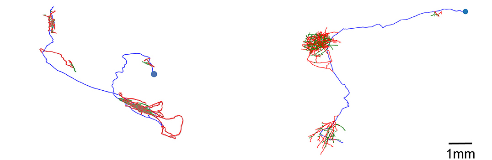
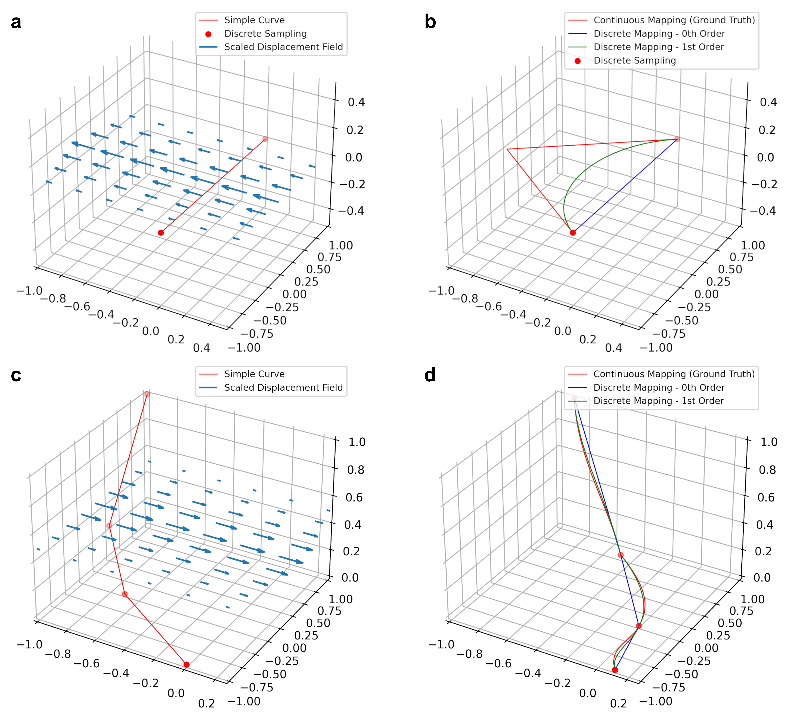
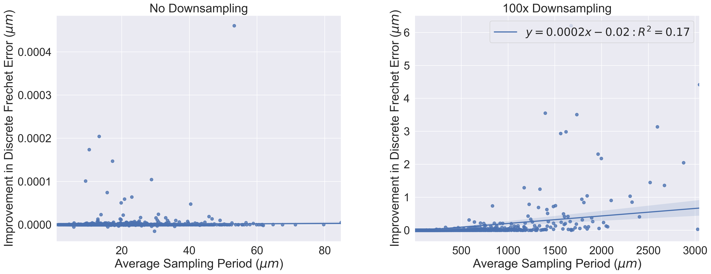

class:inverse ### Preserving Derivative Information while Transforming Neuronal Curves Thomas L. Athey <br><br> <img src="../../images/funding/jhu_bme_blue.jpg" STYLE="width:100%;"/> <!-- <img src="../images/funding/KNDI.png" STYLE="HEIGHT:95px;"/> --> <br> <!-- .foot[w: <http://neurodata.io/talks/??.html>] --> --- class:inverse ### Acknowledgements <br> <div class="small-container"> <img src="../../faces/mim.jpg"/> <div class="centered">Michael Miller</div> </div> <div class="small-container"> <img src="../../faces/jovo.png"/> <div class="centered">Joshua Vogelstein</div> </div> <div class="small-container"> <img src="../../faces/laurent.jpeg"/> <div class="centered">Laurent Younes</div> </div> <div class="small-container"> <img src="../../faces/dtward.jpg"/> <div class="centered">Daniel Tward</div> </div> <div class="small-container"> <div class="centered">Ulrich Mueller</div> </div> --- class:inverse ### Context Thousands of neurons are being mapped to common coordinate spaces. <footer, style="font-size: 12px"> Winnubst et. al., 2019, BICCN, 2021 </footer> --- class:inverse ### Neuron Traces are Piecewise Linear Curves  --- class:inverse ### Some Notation Registration Transformation $\phi: \; \mathbb{R}^3 \rightarrow \mathbb{R}^3$ $$ \phi: \text{Position in target space} \mapsto \text{Position in atlas space}$$ Curve $c: [0,L] \rightarrow \mathbb{R}^3$ with discrete sampling: $$\lbrace x_i=c(t_i): t_1<...<t_n \rbrace$$ Zeroth Order Mapping $$\phi \cdot \lbrace x_i \rbrace_i \triangleq \lbrace \phi(x_i) \rbrace_i$$ --- class:inverse ### Problem Neglecting the action of a nonlinear mapping on a curve's derivatives can introduce errors, especially if the control points are far from another. --- class:inverse ### Higher Order Action Jet space of order $k$, $J^k$ concatenates a space with it's tangent bundles (up to order $k$), e.g. $(t', c(t'), \dot c(t')) \in J^1$. Statement. The following defines a group action, that we call the $k$'th order mapping. $$\phi \cdot \lbrace (t_i,c(t_i),\dot c(t_i),...c^{(k)}(t_i) ) \rbrace_i \triangleq \lbrace (t_i,g(t_i),\dot g(t_i)...g^{(k)}(t_i) ) \rbrace_i$$ where $g=\phi \circ c$ Now we know how to transform derivatives. --- class:inverse ### Zeroth Order Error Bound 1 --- class:inverse ### Zeroth Order Error Bound 2 --- class:inverse ### Comparable Error Bounds --- class:inverse ### Simulated Data  --- class:inverse ### Real Data --- class:inverse ### Real Data --- class:inverse ### Difference in Error between Zeroth and First Order  --- class:inverse ### Discussion - Under our example, zeroth order mapping error is bounded by $\sim 0.011L+0.022$ for line segment of length $L$. - e.g. $L=10 \mu m \rightarrow 0.13 \mu m$, $L=1 mm \rightarrow 11 \mu m$. - These are likely inconsequential errors, likely due to different scales of trace sampling ($\sim 10 \mu m$), and registration ($\sim 100 \mu m$).